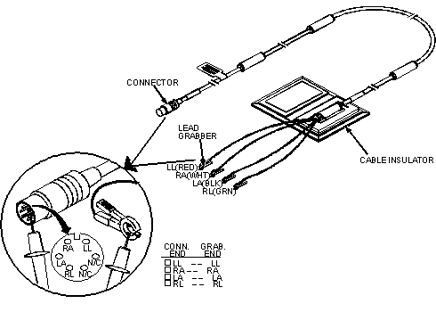
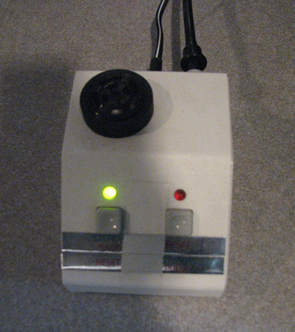

Proprietary to General Electric
Direction 5670000, Rev# 1
Module Version 13.0, Version Date 1/25/10
Proprietary to General Electric |
| ||||
| Strong Magnetic Field! | ||||
| Ferrous materials can become dangerous projectiles in the presence of the magnetic field Produced by the Discovery Magnet. | ||||
| Do not Bring any ferromagnetic tools or equipment into the magnet room. |
| NOTE: | If failures occur during the PM mode, set up an appointment with the customer to resolve them. |
| Condition | Reference | Effectivity |
|---|---|---|
No required conditions. | - | - |
Important - When running the following tasks in PM mode:
Insert a service key, which enables access to the PM Assist menu options on the PM tab in the Common Service Desktop (CSD).
LVShim PM Mode – see LVShim PM Mode.
Spike Noise Check: use EPI White Pixel – see EPI White Pixel PM Mode.
Grafidy3, Coherent Noise and Signal to Noise Check: use SPT – see System Performance Testing (SPT) PM Mode.
The tool displays the following information:
Patches that were downloaded and installed.
Patches that were downloaded to the scanner via sweep, but not installed. (This option only applies to sites with a Broadband connection.)
Patches that need to be installed, but were not downloaded.
An “other” category for patches that may be out of date.
To install patches that were downloaded to the scanner, log in to the root level by doing the following:
From the pull-down menu on the [Tools] icon, select [Shutdown], and the system shuts down.
When the login window eventually displays, log in as root using the password, operator.
When the Guided Install menu shown in Illustration 1 displays, click on the Patches option.
Install the patches. (For instruction on patch installation, refer to Installing Software Updates .)
After the patches are installed, they can be archived to CD or DVD media. To archive the patches, insert CD/DVD media and select [Save to CD/DVD] . (This facilitates restoration of the patches from CD/DVD media if the software crashes.)
The LVShim - Gradshim procedure is performed in LVShim PM mode. The objective is to fine-tune the homogeneity of the magnet by using gradients only. The Gradshim process is performed with a sampling diameter of 22 cm DSV and the same bandwidth as Fine Shim, which depends on the quality (good or bad) of the fine tuning. Once the scan passes and all harmonics are in spec, the magnetic field is reanalyzed in Test mode automatically at 45 DSV for customer acceptance.
Phantom Setup
Remove all coils from the cradle and phantoms from the bore.
Place the LVShim phantom directly on the cradle, as shown in . Make sure that the phantom is centered in the Right-Left direction.
Press the [Advance to Scan] button.
Running the LVShim Tool:
If not already in place, insert the Restricted Service Key in a host computer USB port.
Click Service Browser.
On the MR Service Desktop, select the [PM] icon and expand the PM Assist option. (See Illustration 3.)
Illustration 3: MR Service Desktop, LVShim PM mode

Click the Click here to start this tool link.
Illustration 4: LVShim Tool

Refer to Illustration 4 and ensure that:
To proceed, click the [Scan] button.
When all iterations are complete and all the harmonics are within specifications, click [Exit] in the LVShim window.
The Echo Planar Imaging (EPI) White Pixel Tool is used to troubleshoot image artifacts. This tool should be run during the PM and prior to SPT PM Mode. Use Report Manager to view results.
Remove any phantoms from the cradle.
Place an empty head coil on the cradle.
Landmark on the head coil.
Press <MOVE TO SCAN>.
From the MR Service Desktop, refer to Illustration 5 and proceed as follows:
Select the [PM] icon.
If necessary, expand the PM Assist menu option.
Select [EPI White Pixel PM Mode].
Click on the Click here to start the tool link.
The tool first runs through Head EPIWP PM, then moves the head coil out of the way and performs Body EPIWP PM. If the test stops before the tool completes both head and body modes, view the Error Log to determine the troubleshooting path.
The EPI PM files generated by this tool can be found in the Report Manager tool. To access:
From the MR Service Desktop, click the [Utilities] icon, Report Manager, and use the password: mrgo1.
Look for file type: EPT and locate those files with the PM extension. (IBIS looks for PM files to track Planned Maintenance completion.)
SPT PM Mode is a special SPT mode that must be run as a part of the Planned Maintenance procedure. SPT PM Mode should be run only after LVShim has been run.
Properly position the Head Sphere and Loader as previously noted.
Establish landmark on the center line of the Head Loader.
Establish landmark, but do not Advance to Scan.
Run the cradle in so the display reads 1135mm.
Turn on the alignment light and then position the body loader on the cradle so that the alignment light is properly centered on the loader crosshair. Place wedges on both sides of the body loader to prevent movement.
Run the cradle back so that the alignment light is on the center of the Head Loader.
Establish landmark, and then press [Advance to Scan].
Using the appropriate Head TLT phantom in the head coil, landmark the phantom as follows:
Insert the DQA phantom and turn on the alignment lights.
Move the cradle so the alignment lights align with the center mark on the DQA phantom.
From the CSD PM page, select the SPT PM Mode by clicking on it in the expanded PM Assist folder on the left side of the page shown in Illustration 7.
Start the SPT tool by clicking the link: Click here to start this tool . (See Illustration 8.)
The System Performance Test (SPT) screen, shown in Illustration 9, will display. (For the PM SPT Mode, all the tests are preselected and cannot be changed. The test takes just over one hour to complete.)
The PM Check tool shows the status of Planned Maintenance:
Date of last LVShim and SPT PM Mode run on the system.
When the next Planned Maintenance is due.
Severe failures left from the last Planned Maintenance. (The clinical user will be notified in three weeks of any unresolved failures.)
Verify the PM completed successfully.
Click PM Check. (See Illustration 12.)
Click the Click here to start this tool link shown in Illustration 13.
The pm show info window opens, and the information shown in Illustration 14 displays.
For the PM Assist to be successful and complete, make sure all test results pass. (See Illustration 15.)
PM Schedule allows you to input the date of the next PM. You must enter a date in one of the next two calendar months. Scheduling the next PM will disable all PM-related pop-ups and attention area messages to the customer until that date.
Click on PM Schedules in the expanded PM Assist folder shown in Illustration 16.
Click on the link: Click here to start this tool (shown in Illustration 17) to start the tool and open the PM Schedules tool.
If PM never performed on this system:
If PM was not performed on this system, the following message displays in the tool: There is no PM performed on this system at least once. Schedule a date for PM, run SPT & LVS PM tests and hit PM Check link on CSD.
Enter your Name or initials, and press <Enter>. (See Illustration 18.)
Enter the Next scheduled PM date, and press <Enter>. (See Illustration 19.)
If system following normal PM schedule:
The tool will display when the last PM was performed and when the next PM is scheduled. (See Illustration 20.)
Enter the date the next PM is to be performed, making sure the date is within the specified time limit provided by the tool, and press <Enter>. (See Illustration 21.)
The PM History utility displays the Planned Maintenance summary information.
Click on PM History in the expanded PM Assist folder. (See Illustration 22.)
Click on the link: Click here to start this tool. (See Illustration 23 to start the PM History tool and Illustration 24 to open the PM History page.)
This section includes the following procedures:
Oxygen Monitor - Oxygen Monitor
Check Cardiac Gating Cable - Check Cardiac Gating Cable
Check Patient Blower Fans and Filters - Check Patient Blower Fans and Filters
Pneumatic Patient Alert System - Pneumatic Patient Alert System
This procedure checks the Oxygen Monitor operation when the oxygen level is at 20.9% (normal air) and when it is reduced to less than 18% (alarm point). There are two types of Oxygen Monitor Calibration Kits. The part number of the older kit is 46-271523G1 and the newer kit (Aerosol Gas Calibration) is 2173691.
The preferred method is to use the newer kit when it is available. When using the older Oxygen Monitor Calibration Kit, the recommended method requires two Field Engineers. Since there are times when a second engineer and/or the Oxygen Monitor Calibration Kits are not available, this procedure covers the use of the newer kit, the older kit with 2 FEs or 1 FE, and no kit at all.
If using the newer kit, the procedure assumes that a Sensor Retrofit Kit 46-301672P3 has been installed on the Remote Sensor Module. The new 5-year Oxygen Sensor (GEMS Part No. 2112207) consists of a sensor cell, a battery, and a PC board with conversion circuitry contained in an RF-shielded enclosure. The procedures are the same for the older sensors and the new 5-year sensor.
Personnel Requirements
Required Persons: 1 or 2
Preliminary Timing (mins): Not applicable
Procedure Timing (mins): Not applicable
Finalization Timing (mins): Not applicable
Preliminary Requirements
Tools and Test Equipment
Consumables: None required
Replacement Parts: None required
Safety: No general safety information
Required conditions: None
Setup Procedure - Check Oxygen Monitor Operation/Installation Date
| NOTE: | For systems with this equipment, there are two functional check procedures for the oxygen monitor subsystem: the oxygen tank/regulator procedure and the aerosol gas calibration procedure. |
Locate the oxygen monitor sensor. (See Illustration 25.)
Expose the sensor to 20.9% oxygen from Oxygen Calibration Kit for one minute. If the kit is not available, open the door(s) to the exam room, and allow fresh air to circulate for at least 15 minutes. [If using the older kit and a second FE is not available, open the exam room door(s).]
After sensor has been exposed to 20.9% oxygen for one minute (or fresh air for 15 minutes), check that meter on the oxygen monitor (located in operator room) reads 20.9% ±0.25% (20.65% - 21.15%). See Illustration 27.
If meter reading is outside this range, adjust O2 GAIN pot on front of the oxygen monitor until the meter reads 20.9% ±0.25%.
If specified range cannot be obtained, replace the oxygen monitor sensor and calibrate the oxygen monitor.
Expose sensor to 17% oxygen from the Oxygen Calibration Kit. If the newer kit is not available, a second FE is required. If a second FE is not available, go to Step 3.h.
Observe the Oxygen Monitor. (See Illustration 28.) The following should occur when the alarm point of 18% ±0.25% is reached:
If the alarm does not sound when the alarm point (18% ±0.25%) is reached, calibrate the oxygen monitor as described in Direction 15336, Oxygen Monitor Subsystem.
When the Oxygen Monitor alarm point is successfully checked, expose the sensor to ambient air for one minute.
For one FE without the newer Oxygen Monitor Calibration Kit, move the sensor to the Control Unit by doing the following:
| NOTE: | If two oxygen monitors are present (Transportables/Relocatables with helium and nitrogen), make sure sensor is connected to the correct monitor in the following step. |
At the oxygen monitor:
Expose sensor to 17% oxygen from the Oxygen Calibration Kit. If a 17% oxygen cylinder is not available:
Observe the Oxygen Monitor. (See Illustration 26.) The following should occur when the alarm point of 18% ±0.25% is reached:
If the alarm does not sound when alarm point (18% ±0.25%) is reached, calibrate the oxygen monitor as described in Direction 15336, Oxygen Monitor Subsystem.
When the oxygen monitor alarm point is successfully checked, disconnect the sensor from Terminal Board TB-1, and reinstall it in the magnet room.
Repeat Step 3.j to make sure alarm sounds when the sensor is installed in the magnet room.
Expose the sensor to ambient air for one minute.
Press the RELAY RELEASE pushbutton on the front cover of the Control Unit. The following should occur:
If two oxygen monitors are present (Transportables/Relocatables with helium and nitrogen), repeat this entire procedure to check the operation of a second monitor.
Record the date of the oxygen monitor functional check in the Site Log.
Oxygen Monitor Functional Check Procedure - Aerosol Gas Calibration Kit (2173689)
Under certain conditions, the resistor pod closest to the patient leads on the Cardiac Gating Cable may become warm or burn the patient. This section describes a safety check for the cable to protect the patient.
Preliminary Requirements
Consumables: None required
Replacement Parts: None required
Safety: No general safety information
| ||||
| If the customer cable fails any of the safety checks below, the cable should be disposed of immediately. | ||||
Procedure
Open the Cable Insulator 46-306867G1 attached to the end resistor pod. (See Illustration 36.)
Illustration 36: Cardiac Gating Cable Safety Check (Continuity)

Check for any smell or visual evidence of warming (i.e., brownish discoloring of the insulation material).
Check for any cracking in the pod insulation. If there is evidence of damage, replace the cable. Otherwise close and seal the cable insulator.
Make sure that all lead grabbers are secured to the cable.
| ||||
| Blowers should be replaced every 5 years as a worn blower (or fan) can cause White Pixel failures. | ||||
Determine age of blowers. If age is greater than 5 years, replace as necessary with Comfort Module Fan 2121199-2 or Body Coil Fan 2121199-3.
Remove the filter grill from the Patient Blower by turning four wing nuts 1/4 turn counterclockwise. (See Illustration 37.) Listen for operation of fans.
Remove and replace Filter 2121199-5 as necessary.
The Audio Alert (shown in Illustration 38) is a small box located near the console.
Illustration 38: Audio Alert

Perform the Pneumatic Patient Alert Check.
When this is complete, check the box next to: Is Pneumatic Patient Alert Check done?
Compress the patient warning squeeze bulb, located by the magnet enclosure and connected to the Physiological Acquisition Controller (PAC) assembly.
An audible alarm should be heard . If it is not audible, arrange for repair of the Pneumatic Patient Alert System.
| ||||
| Electrocution Hazard! | ||||
| Dangerous voltages are present inside the rf cabinet when energized. | ||||
| Remove power from the rf cabinet at the PDU and then lockout/tagout the pdu. |
Open the front cover.
Inspect each filter for dust buildup, and clean or replace filter(s) as necessary.
Close front cover.
Procedure Overview
Preliminary Requirements
Required Persons: 1
Preliminary Timing (mins): 15
Tools and Test Equipment: None required
Consumables: Nonmagnetic Plumb Line
Replacement Parts: None required
Safety: No general safety information
Required Conditions: None
Procedure
Press the [Alignment ] button (shown in Illustration 39) on the magnet enclosure's control panel to turn on the alignment lights.
Illustration 39: Alignment Lights On Button

Using the string and nonmagnetic device as a plumb line, verify that the Axial alignment light at the top aligns with the marks on the bridge as shown in Illustration 40.
| NOTE: | Some systems may not have the Coronal alignment lights located on each side of the magnet bore. If not, proceed to Step 3.d. |
Verify that the two coronal laser lights shine across the magnet bore and align with each other and the marks. (There should be only one laser line seen; the one from the laser source on the left side aligns with the laser source from the right.)
If the Axial and Sagittal alignment lights are not aligned (Axial line does not match up with the marks on the bridge or the plumb line), then the top Axial laser source at the magnet entry has to be adjusted. If two lines are seen, the laser sources on the left and right side of the magnet entry need to be adjusted. Refer to Laser Light Alignment to align.
If not present, make two marks with a pen in the locations shown in Illustration 40. These marks will be the reference for future Alignment Light Checks.
If there is a drift in time, time adjustment is necessary. The procedure is as follows:
Select Service Desktop Manager.
Click [Guided Install] => [Start] and type: operator at the Password prompt.
When the Guided Install window pops up, click [SET TIME/DATE].
Adjust the Time, Month, Date and Year.
Click [SET TIME/DATE ] button, and the time will now be reset.
Close the Guided Install window.
Remove the dust filter from front of the computer.
Clean dust filter as necessary.
Reinstall the dust filter.
Access the Common Service Desktop.
Select [Utilities], then select T file clean-up.
Remove the unnecessary files.
Open a C-shell.
Type storelog and press <Enter>. This removes the unnecessary files and frees up disk space.
Check for dust on the PC fan located in the rear of the Brainwave Lite cabinet. (See Illustration 42.)
If needed, remove the dust with a vacuum.
Preliminary Requirements
Required Persons: 1
Item: Toothpick or similar nonmetallic object
Refer to Inspect Cryogen Vent for the procedure.
| ||||
| If MRU fails test, arrange for IMMEDIATE remedial service. Failure to have an operating MRU will prevent bringing down the magnetic field in the event of an emergency. | ||||
| ||||
| Avoid a quench of the magnet! Do NOT attempt any tests or maintenance on MRU module unless thoroughly familiar with the process. No PM step will require pressing the [Emergency Rundown] button in the center of the MRU module. | ||||
Preliminary Requirements
Required Persons: 1
Preliminary Timing (mins): 15
Tools and Test Equipment: None required
Consumables and Replacement Parts: None required
Required Conditions: None
Procedure
Verify green LED on front panel is lit (indicating battery charger has power). (See Illustration 43.)
Press the TEST BATTERY switch. The green LED labeled BATTERY will illuminate if battery is adequate.
If the LED illuminates, proceed to Step 2.g.
If the LED does not illuminate, proceed to Step 2.c.
| ||||
| Avoid a quench of magnet! Do NOT use an ohmmeter on quench heater circuits or in switch heater circuits on an energized magnet. | ||||
Open front cover and check for 20.7 V between TP-1 and TP-2 on circuit board.
If voltage is 20.7 V or greater, the comparator circuit or LED driver circuit requires adjustment or repair.
If voltage is below 20.7 V, proceed with next three steps.
Check for an open battery fuse F2. If blown, replace with a 2.5 Amp fuse.
Visually inspect battery for signs of leakage.
Remove fuse F2, and check battery voltage. If battery replacement is needed, order three 6 V, Gel Cell batteries 46-294231P5.
Press the TEST HEATER switch to position A, and verify the green LED labeled HEATER illuminates.
If the LED illuminates, proceed to Step 2.j.
If the LED does not illuminate, proceed to Step 2.h.
Press the TEST HEATER LED switch to verify LED is working. If LED is OK, but does not illuminate when TEST HEATER switch is pressed, a serious circuit failure has been detected.
Contact your MAC Team Leader, MR RSE, or the NSC 24-hour Magnet Support Line at 1-800-321-7937 for correct troubleshooting procedure.
Press the TEST HEATER switch to position B, and verify green LED labeled HEATER illuminates.
If the LED illuminates, proceed to Step 2.m.
If LED does not illuminate, proceed to Step 2.k.
Press the TEST HEATER LED switch to verify LED is working. If LED is OK, but does not illuminate when TEST HEATER switch is pressed, a serious circuit failure has been detected.
Contact your MAC Team Leader, MR RSE, or the NSC 24-hour Magnet Support Line at 1-800-321-7937 for correct troubleshooting procedure.
Replace the front cover.
Preliminary Requirements
Required Persons: 1
Preliminary Timing (mins): Not applicable
Procedure Timing (mins): Not applicable
Finalization Timing (mins): Not applicable
Procedure Overview
Preliminary Requirements
Tools and Test Equipment
Consumables
Replacement Parts
Safety
Required Conditions
Sumitomo CSW-71 Compressor 4 Kelvin System (Zero Boil-Off)
Inspection of Sumitomo CSW-71 Compressor 4 Kelvin System
Check compressor hour meter on front of compressor. Adsorber must be replaced after 20,000 hours of compressor run time.
Review records to verify the adsorber was replaced on schedule.
Calculate when the next replacement is due. (Replace after 20,000 hours.)
Record calculated adsorber replacement date on Site Log and on the schedule. (Also, mark the next replacement due date on an external tag on the compressor, indicating the replacement adsorber part number: 2172241.)
Connect the laptop to the magnet monitor using a 9-pin female to 9-pin female null modem cable. Login name is MMService and password is MagnetMonitor (both case sensitive).
Go to the [Diagnose] => [graph] screen. Plot out the magnet vessel pressure for several hours, and verify that vessel pressure is cycling between 3.9 psi and 4.1 psi.
Select HDC (heater duty cycle). Plot the duty cycle for the maximum number of days. (A consistent duty cycle indicates the magnet is thermally stable. A decreasing duty cycle indicates that the magnet's thermal performance is decreasing.)
Replacement of Sumitomo CSW-71 Adsorber
| ||||
| Electrical shock hazard! | ||||
| do not perform maintenance while compressor is connected to an electrical power source | ||||
| Disconnect the compressor unit from power source to avoid electrical shock |
Since the Oil Mist Adsorber is required to be replaced every 20,000 hours of operation, calculate when the next replacement is due.
Shut down the Cryocooler.
Disconnect the Input Power cable from the compressor unit.
Disconnect the Supply and Return flex lines from the compressor unit.
Loosen the screws that hold the compressor side panel and remove it. (See Illustration 44.)
| ||||
| The Aeroquip fittings will usually bleed off 3 bar (45 psi) of helium gas pressure each time the lines are disconnected and reconnected to the coldhead or compressor. Any time the gas line connections are removed and reconnected, a helium gas recharge with 99.999% purity helium gas is required. | ||||
Use two wrenches to disconnect the adsorber Self-Sealing Coupling. (See Illustration 45.)
Using two wrenches, remove the nut securing the adsorber to the rear panel. (See Illustration 46.)
Illustration 46: Nut Securing Adsorber to Rear Panel

Remove the nut and washer securing the adsorber to the base panel of the compressor unit. (See Illustration 47.)
Remove the used adsorber from the compressor frame. (See Illustration 48.)
Place the new adsorber in the compressor unit.
Secure the adsorber to the base panel of the compressor unit by tightening the nut and washer.
| ||||
| The Aeroquip fittings will usually bleed off 3 bar (45 psi) of helium gas pressure each time the lines are disconnected and reconnected to the coldhead or compressor. Any time the gas line connections are removed and reconnected, a helium gas recharge with 99.999% purity helium gas is required. | ||||
Secure the adsorber to the rear panel by tightening the nut.
| ||||
| Ensure the flat rubber gasket of the self-sealing connector is clean and properly positioned before connection. Perform the first turns by hand and firmly seal the connection using three wrenches. Make the connection quickly to minimize minor gas leakage. | ||||
Connect the adsorber Self-Sealing Coupling.
Reinstall the side panel, and secure it by tightening the screws.
Ensure that the pressure gauge indication is within the specified value for the type of coldhead present. Refer to CSW-71 vendor manual if needed.
| ||||
| Personal injury hazard! | ||||
| the adsorber is under system pressure of 230 psi when disconnected from the chassis. | ||||
| serious personal injury could result if the adsorber is not depressurized before disposal. |
To depressurize adsorber, slowly screw depressurization fitting (#12 Aeroquip) onto the top of Aeroquip fitting of the used adsorber. Point Bleed Fitting away from personnel.
Sumitomo F-50 Compressor (Zero Boil-Off)
Inspection of Sumitomo F-50 Compressor
Verify compressor pressure is within tolerance. (See Illustration 49.)
| ||||
| Adsorber for the Sumitomo F-50 Compressor should be replaced every 30,000 hours. | ||||
Review records to verify the Adsorber was replaced on schedule.
Replacement of Sumitomo F-50 Compressor Adsorber
| ||||
| potential injury hazard! | ||||
| The cryocooler (coldhead, compressor unit, compressor adsorber, and flex lines) contain highly pressurized helium gas. if punctured, an explosion or escape of gas could occur. | ||||
| Keep all sharp objects away from the cryocooler. be sure to open the purging valve gradually, and purge the helium gas from all components before disposing. |
| ||||
| Heavy Load! | ||||
| The Adsorber is moderately heavy, weighing approximately 24 lbs (11.5 kg). | ||||
| Be careful when handling it to avoid injuries. |
| ||||
| Potential Injury Hazard! | ||||
| Compressor is relatively unstable. | ||||
| To prevent injury or damage to equipment, do not place objects on or stand on top of the compressor. |
Locate the tools listed in Table 1.
Shut down the Cryocooler.
Disconnect the Input Power cable from the compressor unit.
Disconnect the Supply and Return flex lines from the compressor unit.
Loosen the screws that hold the compressor side panel and remove it. (See Illustration 50.)
Using three wrenches, disconnect the Adsorber self-sealing coupling. (See Illustration 51.)
Using two wrenches, remove the nut securing the Adsorber to the rear panel. (See Illustration 52.)
Loosen the nut and washer securing the Adsorber to the base panel of the compressor unit. (See Illustration 53 and Illustration 54.)
Remove the Adsorber from the compressor frame as shown in Illustration 55.
Installation of New Adsorber
Place the new Adsorber into the compressor frame as shown in Illustration 56.
Secure the Adsorber to the front panel by tightening the nut with two wrenches. (See Illustration 57.)
Secure the replacement Adsorber to the base panel of the compressor unit by tightening the nut. (See Illustration 58.)
Connect the Adsorber self-sealing coupling using three wrenches. (See Illustration 59.)
Ensure that the pressure gauge indicates the specified value for the type of coldhead present. (See Illustration 49.) Charge the helium gas in case of a low pressure indication.
Reinstall the side panel, and secure it by the tightening the screws.
| ||||
| Personal injury hazard! | ||||
| the adsorber is under system pressure of 230 psi when disconnected from the chassis. this could cause serious personal injury if not depressurized before disposal. | ||||
| depressurize adsorber before disposing of it. |
To depressurize Adsorber, slowly screw depressurization fitting (#12 Aeroquip) onto the top of Aeroquip fitting of the used Adsorber. Point Bleed Fitting away from personnel.
Preliminary Requirements
Required Persons: 1
Preliminary Timing (mins): Not applicable
Tools and Test Equipment: Screwdriver and/or pliers
Consumables and Replacement Parts: None required
Required Conditions: None
Safety: No safety considerations
Using a screwdriver or pliers, open the filter clamp and remove the body coil filter shown in Illustration 60.
Rinse off the air filter with cool, low-pressure water. Allow gravity to flush dirt out of the air filter by applying water to the clean side of the filter, up and down the length of the pleats.
| NOTE: | Use of any other drying method (such as compressed air, dryer heater or heat gun) could damage the filter. |
After rinsing the filter, gently shake off the excess water and allow the filter to dry naturally.
| ||||
| Failure to install the filter properly could lead to an improper seal, resulting in equipment damage. Follow filter OEM installation instructions. | ||||
| NOTE: | Do not apply filter oil prior to reinstalling the filter. |
Inspect the filter for damage.
If the filter is damaged, discard it and order and install a new one.
If the filter is not damaged, reinstall it in the same position prior to removal. Make sure the filter clamps are secure. (Clamps are reusable.)
Refer to Illustration 61, and close the three yellow-handled valves in the order described:
Lower right valve: Callout A
Middle valve: Callout B
Left valve: Callout C
Remove the black plastic hex cap as shown in Illustration 62.
Pull out the wire mesh cylindrical screen and clean or replace it.
Reverse previous steps to complete:
Install a clean filter.
Replace the hex cap.
Open the left valve.
Open the middle valve.
Open the right valve.
Reserved for future use.
No further steps.
Perform System Shutdown, and verify that the PC is turned off.
Press one of the EMERGENCY STOP buttons:
At the Magnet Enclosure, verify that all LEDs and lights on the magnet display are off.
Verify that the AC Power on the front of the RF Amplifier is off. (See Illustration 63.)
Verify that all LEDs on the Gradient (ACGD or HFD) Power Supply Module are off. (See Illustration 64.)
Press the [EMO Reset] button on the PDU. (The aforementioned LEDs should now illuminate.)
Repeat Steps 2 through 4 for each of the other EMERGENCY STOP buttons.
Press one of the following EMERGENCY OFF buttons:
Verify that the breaker internal to the PDU trips.
Reset the Input circuit at the PDU by turning it OFF, then back ON.
Repeat Steps 6 through 8 for other EMERGENCY OFF buttons.